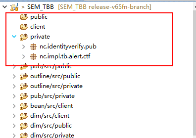

插件具有如下三个功能：
1. 一键清除缓存，针对开发较常用的清缓存操作，从原来的7步操作缩短到一步。
2. 导入模块补丁/导入补丁zip文件功能，原来的补丁手动复制粘贴补丁至少需要十几步，缩短到4步， 原来手动操作步骤：新建3个资源文件夹，调整编译顺序，分别到补丁的classes文件夹复制粘贴java文件。
插件步骤：选择目录路径，finish

补丁已经成功导入：
3. 一键连接到数据库，直接提取eclipse中配置的数据源信息，实现一键登录连接到数据库连接软件，
操作步骤：
配置好数据源
点击按钮。
连接成功。
总结：该插件不仅仅可以减少重复劳动，还可以让开发减少工作中差错， 比如，如果开发都养成每次把补丁导入工程的习惯，就不会出现新出补丁覆盖原有逻辑情况，因为都是基于已有补丁基础上做的修改， 在现在项目上越来越多的专项需求的情况下，该插件一定能显示出它的威力。 而对于数据库一键连接功能可以消除人为疏忽开发环境和工具软件连接数据库不一致的情况，少了很多不必要的检查和问题排查。 并且减少了需要连接数据库的时候还需要重新寻找一次密码的麻烦。
1.打开eclipse
2.help->install new software
在第一个红色框输入http://nc.ximou.xyz
勾选第二个红色框的内容
去掉contact all update site前的勾
Next
勾选同意license
一路确认，重启eclipse